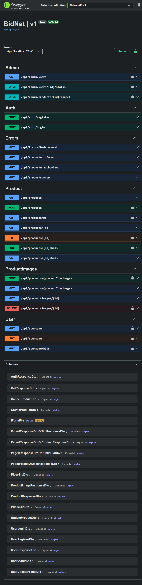
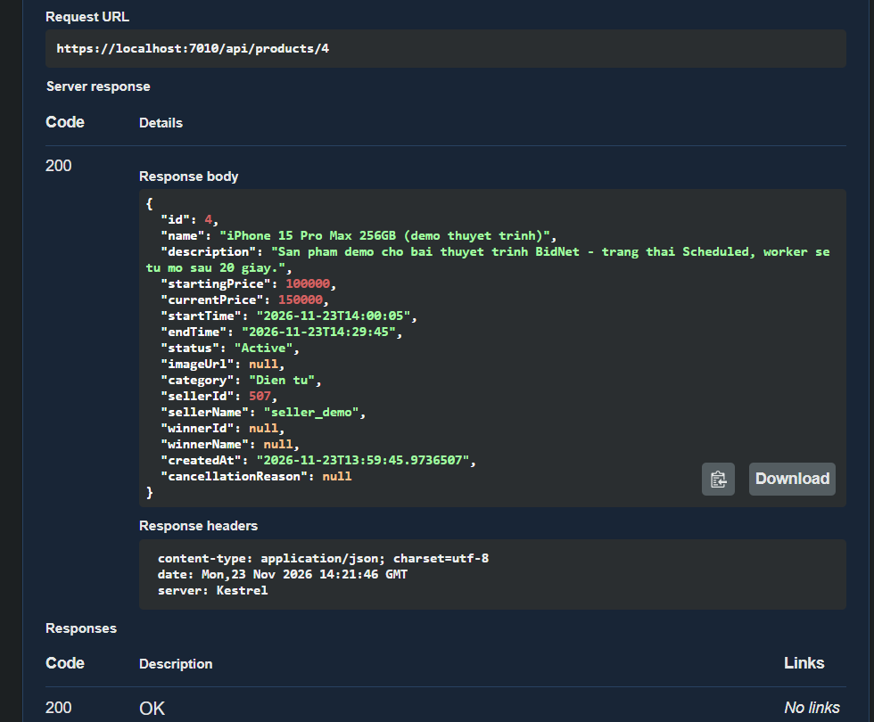
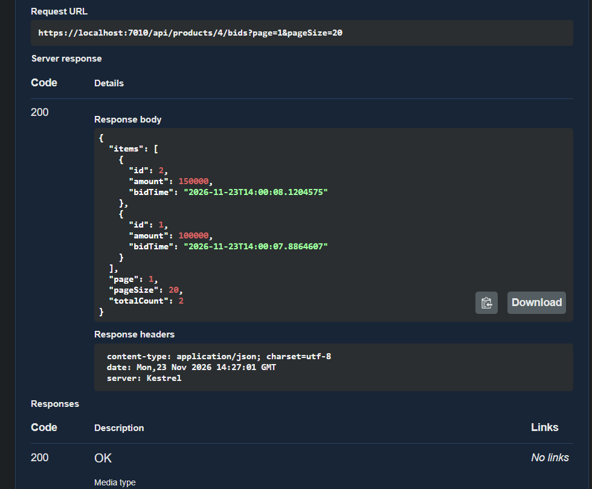

BidNet
Sàn đấu giá sản phẩm trực tuyến — Back-end REST API + Realtime
ASP.NET Core 10EF Core 10 + SQL ServerJWT + PBKDF2
SignalRCloudinarySerilogxUnit
Người trình bày: ……………………… • Lớp: ………………………
Mở bằng trình duyệt — phím ←/→ chuyển slide, phím N bật ghi chú người nói
Chào thầy và các bạn. Hôm nay nhóm em trình bày đề tài BidNet — sàn đấu giá sản phẩm trực tuyến. Em sẽ đi qua bài toán, kiến trúc, các luồng nghiệp vụ quan trọng nhất là đặt giá chống tranh chấp và vòng đời phiên tự động, sau đó demo trực tiếp trên hệ thống đang chạy.
1. Bài toán & phạm vi phiên bản 1
Một phiên đấu giá = một sản phẩm = một người bán = tối đa một người thắng
✔ Đã triển khai
- Đăng ký / đăng nhập JWT, hồ sơ cá nhân
- Đăng & sửa sản phẩm trước giờ mở phiên
- Tìm kiếm, lọc, phân trang danh sách phiên
- Đặt giá tăng dần, bước giá tối thiểu 1.000 VND
- Worker tự mở / đóng phiên, chốt người thắng
- Realtime SignalR: giá mới & kết quả phiên
- Admin khóa tài khoản, hủy phiên vi phạm
- Upload ảnh Cloudinary, Swagger/OpenAPI, 11 test
✘ Ngoài phạm vi v1 (nói rõ trước)
- Không thanh toán thật / ví / đặt cọc — cột
Balance chưa dùng
- Không đấu giá tự động, mua ngay, trả giá kín
- Không chat, đánh giá, login bên thứ ba
- Repo này là Back-end; demo bằng Swagger UI (frontend là dự án riêng, cổng 3000)
BidNet giải quyết bài toán đấu giá online: người bán đăng sản phẩm kèm khung giờ, người mua đặt giá tăng dần, hết giờ hệ thống tự chốt người thắng. Phạm vi v1 tập trung vào tính đúng đắn của nghiệp vụ đấu giá: giá chỉ tăng, không đua ghi sai, phiên tự mở đóng. Phần thanh toán chưa làm — cột Balance chỉ là chỗ chờ, bọn em không hiển thị nó như số dư giao dịch được.
2. Kiến trúc tổng thể
Hệ thống phân lớp rõ: Controller chỉ nhận request và trả status, toàn bộ nghiệp vụ nằm ở Services, truy cập dữ liệu qua Repositories và AppDbContext của EF Core. Hai thành phần chạy song song với HTTP: AuctionHub của SignalR pushing sự kiện realtime, và worker nền AuctionClosingService quét mỗi 5 giây để mở/đóng phiên. Ảnh sản phẩm lưu trên Cloudinary, database chỉ chứa metadata. Điểm đáng nhớ: BidService cố tình dùng thẳng DbContext để INSERT Bid và UPDATE CurrentPrice nằm trong MỘT transaction.
3. Cơ sở dữ liệu — 4 bảng
Bốn bảng: Users, Products, Bids, ProductImages. Tiền dùng decimal(18,2) chứ không float để tránh sai số. Username/Email có unique index chặn trùng ngay cả khi hai request đồng thời. Products có cột RowVersion kiểu rowversion của SQL Server — chìa khóa chống đua giá. Index (Status, StartTime, EndTime) giúp worker quét nhanh. Khóa ngoại Seller/Winner/User dùng Restrict để không xóa cứng người đã tham gia phiên. Schema quản lý bằng 4 migration trong Git.
4. Vòng đời phiên đấu giá
Phiên mới tạo ở trạng thái Scheduled. Worker nền tự chuyển sang Active khi đến StartTime, và sang Completed khi qua EndTime — không cần bất kỳ request nào từ client. Admin có thể hủy phiên Scheduled hoặc Active sang Cancelled kèm lý do. Quy tắc sống còn: API đặt giá không tin nhãn trạng thái vì worker có độ trễ 5 giây — BidService luôn tự kiểm tra StartTime ≤ now < EndTime bằng giờ UTC của server. Phiên đã Completed/Cancelled không nhận giá mới.
5. Xác thực: PBKDF2 + JWT
Đăng ký: mật khẩu băm PBKDF2-SHA256 với 210 nghìn vòng lặp và salt ngẫu nhiên 16 byte — không bao giờ lưu mật khẩu rõ; role luôn là User, không thể tự đăng ký Admin. Đăng nhập: so hash bằng FixedTimeEquals chống timing attack, tài khoản bị khóa trả 403, đúng thì phát JWT hạn 60 phút chứa Id, Username, Role ký HMAC-SHA256. Điểm ăn điểm: mọi hành động nhạy cảm gọi CurrentUser.RequireActiveAsync đọc LẠI database — nên Admin khóa tài khoản là mất quyền ngay lập tức dù token còn hạn.
6. Đăng & sửa sản phẩm — quy tắc phía server
POST /api/products — SellerId lấy từ JWT, client không được gửi; phiên mới = Scheduled, CurrentPrice = StartingPrice (ProductService.cs:57–80)- Validate: tên ≤ 200 ký tự; giá nguyên VND ≥ 1.000 (chặn số thập phân);
StartTime > now, EndTime > StartTime, bắt buộc UTC (ProductService.cs:135–150)
PUT /api/products/{id} — chỉ chủ sở hữu (403 nếu không), chỉ khi Scheduled + chưa đến giờ + chưa có bid (409 auction_started) (ProductService.cs:92–94)- Không cho đổi
SellerId / WinnerId / CurrentPrice qua API sửa — server tự quyết định các trường này
- Xung đột RowVersion khi sửa → 409
product_changed (ProductService.cs:106–110)
- Danh sách: lọc theo tên/danh mục/trạng thái/khoảng giá, phân trang
pageSize ≤ 100, sort ổn định, AsNoTracking
- Không xóa vật lý sản phẩm đã có bid — Admin chỉ hủy mềm kèm lý do (BR-06)
Toàn bộ quy tắc nằm trong ProductService chứ không phải controller. Ba câu thầy hay hỏi: vì sao không nhận SellerId từ client? — chống giả mạo danh tính. Vì sao chỉ sửa khi Scheduled và chưa có bid? — bảo vệ tính công bằng của phiên đã chạy. Vì sao chặn giá thập phân? — tiền VND là số nguyên, decimal.Truncate được dùng để kiểm tra.
7. Luồng đặt giá — trái tim của hệ thống
POST /api/products/{id}/bids đi vào BidService.PlaceAsync — điểm ghi bid DUY NHẤT. Mười bước: kiểm tra tài khoản active đọc từ DB; tải sản phẩm; chặn người bán tự đặt (403); kiểm tra cửa sổ thời gian bằng giờ server (409); giá phải nguyên VND dương; bid đầu ≥ giá khởi điểm, bid sau ≥ CurrentPrice + 1000; rồi MỘT SaveChanges ghi cả Bid lẫn CurrentPrice; conflict thì 409; chỉ SAU commit mới phát SignalR BidAccepted; trả 201. Lỗi gửi SignalR chỉ log warning vì bid đã lưu — trả lỗi HTTP sẽ khiến client gửi lại tạo bid trùng.
8. Hai người đặt giá cùng lúc? — RowVersion
Optimistic concurrency: UPDATE Products SET ... WHERE Id=@id AND RowVersion=@cũ — SQL Server tự đổi RowVersion mỗi UPDATE
Request A — đến trước
Đọc CurrentPrice = 100.000, RowVersion = v1
Đặt 150.000 → INSERT Bid + UPDATE
WHERE RowVersion=v1 khớp → COMMIT, RowVersion → v2
201 Created + SignalR BidAccepted
SQL Server
BidNetDb
Products.RowVersion
tự tăng mỗi UPDATE
EF đưa RowVersion đã đọc vào mệnh đề WHERE của câu UPDATE
Request B — đến sau
Cũng đọc CurrentPrice = 100.000, RowVersion = v1
Đặt 120.000 → INSERT Bid + UPDATE
WHERE RowVersion=v1 khớp 0 DÒNG → DbUpdateConcurrencyException
409 bid_conflict — rollback toàn bộ, KHÔNG ghi đè
Client tải lại giá mới (150.000) rồi đặt tiếp
Đây là slide quan trọng nhất. Không dùng lock bi quan vì đọc nhiều ghi ít; dùng rowversion lạc quan. Hai request cùng đọc một giá, ai commit trước thắng; câu UPDATE của người đến sau chứa RowVersion cũ nên khớp 0 dòng, EF ném DbUpdateConcurrencyException, BidService bắt và trả 409. Vì Bid và CurrentPrice chung một SaveChanges nên không bao giờ có chuyện bid lưu mà giá không đổi. Nhóm có test StaleBid chạy trên SQL Server thật chứng minh điều này — InMemory không mô phỏng rowversion nên phải test riêng.
9. Worker nền — tự mở/đóng phiên & chọn người thắng
AuctionClosingService là BackgroundService đăng ký bằng AddHostedService, quét mỗi 5 giây, mỗi lượt tối đa 50 phiên, mỗi lượt tạo DI scope riêng vì worker singleton còn DbContext scoped. Mở phiên: Scheduled đến giờ → Active. Đóng phiên: Active quá giờ → tìm bid thắng bằng OrderByDescending(Amount).ThenBy(BidTime).ThenBy(Id): giá cao nhất thắng, hòa giá thì ai đặt sớm hơn thắng; không có bid thì WinnerId null. Mỗi lượt đọc lại trạng thái trước khi ghi và có RowVersion bảo vệ nên chạy lại không tạo kết quả thứ hai — idempotent. Sau commit phát AuctionClosed cho nhóm đang xem.
10. Realtime SignalR — /hubs/auction
Hub yêu cầu JWT; vì WebSocket không gắn header được nên token đi qua query access_token — Program.cs chỉ cho phép riêng đường dẫn hub này. Client gọi JoinProduct(id) để vào nhóm auction:{id}; kiểm tra lại tài khoản active và sản phẩm tồn tại mỗi lần join. Sự kiện BidAccepted và AuctionClosed chỉ phát SAU khi database commit, và chỉ tới đúng nhóm đang xem phiên đó. Nguyên tắc vàng: database là nguồn sự thật, SignalR là thông báo phụ — mất kết nối xong client phải gọi lại GET /api/products/{id} để đồng bộ.
11. Admin & ảnh sản phẩm Cloudinary
Admin — [Authorize(Roles="Admin")]
GET /api/admin/users: tìm kiếm, lọc Role, sắp xếp, phân trang ≤ 50PATCH .../users/{id}/status: khóa/mở mềm IsActive; không được tự khóa mình (400)- Người bị khóa: token còn hạn vẫn bị chặn ngay ở mọi hành động (RequireActiveAsync đọc DB)
PATCH .../products/{id}/cancel: bắt buộc lý do; phiên đã đóng → 409; conflict → 409; lưu xong phát AuctionClosed- Admin đầu tiên tạo bằng thao tác DBA trên SQL Server — không qua API đăng ký
Ảnh — Cloudinary CDN
POST /api/products/{id}/images (multipart): đúng chủ sở hữu (403)- Whitelist MIME: jpeg/png/webp/gif • tối đa 5MB (400)
- Upload folder
bidnet/products/{id}, transform auto quality/format
- DB chỉ lưu
CloudinaryPublicId + CloudinaryUrl; cập nhật Product.ImageUrl cùng một SaveChanges
- Xóa: destroy trên Cloudinary trước, rồi xóa row DB → 204
- Lỗi Cloudinary → 502, không lộ chi tiết nội bộ
Admin chỉ có hai quyền đặc biệt: khóa/mở tài khoản và hủy phiên vi phạm — và Admin không miễn quy tắc đặt giá. Khóa là khóa mềm IsActive, kết hợp RequireActiveAsync nên có hiệu lực tức thì. Ảnh không lưu nhị phân trong database: file nằm trên Cloudinary CDN, DB giữ metadata để hiển thị và xóa. Trước khi upload kiểm tra quyền chủ sở hữu, loại file và dung lượng.
12. Middleware, bảo mật & xử lý lỗi thống nhất
Thứ tự pipeline là điểm dễ bị hỏi: ExceptionHandling ngoài cùng bắt mọi lỗi; Authentication đứng TRƯỚC RateLimiter để policy bid đếm theo username đã xác thực. Rate limit: auth 10 lần/phút theo IP chống dò mật khẩu, bid 30 lần/phút theo user chống spam; hết quota trả 429 ngay không xếp hàng. Mọi lỗi nghiệp vụ ném ApiException có mã ổn định, middleware đổi thành JSON statusCode/message/traceId — lỗi 500 không lộ stack trace ngoài Development. TraceId giúp đối chiếu với log Serilog ghi file cuộn ngày. ErrorsController là endpoint demo cố tình ném lỗi để chứng minh middleware.
13. DEMO trực tiếp — Swagger UI
Hệ thống đang chạy: https://localhost:7010/swagger • SQL Server Express • worker 5s

- ① Login
seller_demo → Authorize dán token
- ② Tạo phiên: StartTime = +30 giây
- ③ Cả lớp nhìn worker tự mở: Scheduled → Active
- ④ Đổi token
bidder_demo → đặt giá = giá khởi điểm → 201
- ⑤ Đặt thấp hơn bước giá → 400 • seller tự đặt → 403
- ⑥ Admin khóa bidder → đặt tiếp bị 403 ngay
- ⑦
GET /api/Errors/server → 500 + traceId → tìm trong Logs
- Script tự động:
demo-data.ps1
Bây giờ em demo trên hệ thống thật. Kịch bản: đăng nhập người bán, tạo phiên bắt đầu sau 30 giây để cả lớp thấy worker tự chuyển trạng thái mà không cần ai gọi API. Sau đó đổi sang người mua đặt giá hợp lệ và các ca bị từ chối. Cuối cùng dùng tài khoản Admin khóa người mua và cho thấy token còn hạn vẫn bị chặn ngay — chứng minh RequireActiveAsync đọc DB mỗi lần. Nếu mạng khỏe có thể mở thêm cửa sổ SignalR để thấy giá nhảy realtime.
14. Kết quả demo đã chạy thật (23/11/2026)
Product #4 — iPhone 15 Pro Max • giá khởi điểm 100.000 VND • seller_demo (507), bidder_demo (508), bidder_demo2 (509)
| Ca thử | Kỳ vọng | Kết quả thật | Ném ra từ |
|---|
| Tạo phiên, StartTime = +20s | Scheduled → worker tự mở | Active sau ~20 giây ✔ | AuctionClosingService.cs:41–55 |
| Seller tự đặt 200.000 | 403 seller_cannot_bid | 403 ✔ | BidService.cs:24 |
| Bidder đặt 50.000 (< khởi điểm) | 400 bid_too_low | 400 "tối thiểu 100000" ✔ | BidService.cs:41 |
| Bidder đặt 100.000 (= khởi điểm) | 201, bid đầu hợp lệ | 201, bid Id 1 ✔ | BidService.cs:43–51 |
| Bidder2 đặt 100.500 (< bước 1.000) | 400 bid_too_low | 400 "tối thiểu 101000" ✔ | BidService.cs:41 |
| Bidder2 đặt 150.000 | 201, CurrentPrice tăng | 201, CurrentPrice = 150.000 ✔ | BidService.cs:43–51 |
| Lịch sử công khai | Ẩn UserId người đặt | 2 bid, không có UserId ✔ | BidService.cs:75–93 |
Ảnh chụp response thật và JSON lỗi đầy đủ (kèm traceId, stack trace chỉ hiện ở Development): xem BAO-CAO-THUYET-TRINH.md mục 11 và thư mục screenshots/.
Bảng này là kết quả chạy thật bằng script demo-data.ps1 trên máy này sáng nay: mọi ca đều đúng đặc tả. Đáng chú ý nhất là thông báo lỗi trả về đúng giá tối thiểu hiện tại — 100000 rồi 101000 — chứng minh bước giá được tính từ CurrentPrice mới nhất trong DB, và lịch sử công khai không lộ danh tính người đặt.
14b. Ảnh chụp hệ thống thật đang chạy
Swagger UI gọi thật trên https://localhost:7010 — trái: chi tiết phiên #4 (Active, CurrentPrice 150.000) • phải: lịch sử giá công khai ẩn UserId


Hai ảnh này chụp trực tiếp từ Swagger UI của hệ thống đang chạy. Bên trái: GET /api/products/4 trả status Active, currentPrice 150000 sau hai lượt đặt, winnerId null vì phiên chưa đóng. Bên phải: GET /api/products/4/bids trả lịch sử công khai — chỉ có id, amount, bidTime, KHÔNG có UserId, đúng chính sách ẩn danh người đặt giá. Phân trang trả kèm page, pageSize, totalCount.
15. Kiểm thử — 11 test tự động
10 test nghiệp vụ (EF InMemory)
- Hash ≠ plaintext; khóa tài khoản → 403; trùng username/email → 409
- Giá thập phân → 400; SellerId từ identity; Scheduled + CurrentPrice = StartingPrice
- Seller tự đặt → 403; thiếu bước giá → 400 và DB không đổi
- Người khác sửa → 403; phiên Active sửa → 409; hết hạn đặt → 409
- Phân trang + lọc status; update profile qua repository
- Worker thật chạy trong test: đóng phiên, WinnerId = người đặt cao nhất
- Mỗi test một DB GUID riêng, mock SignalR bằng Moq
1 test SQL Server thật (opt-in)
StaleBid_CannotOverwriteCommittedPrice- Bật bằng
BIDNET_TEST_SQL=1 + connection string
- Tạo DB tạm
BidNet_Test_<guid>, xóa sau test
- 2 DbContext cùng đọc 1 RowVersion → cái thứ hai phải ném DbUpdateConcurrencyException
- Vì sao tách riêng? InMemory không thi hành rowversion
- Chạy:
dotnet test Tests/BidNet.Tests.csproj
Bộ test phủ đúng 12 ca nghiệm thu bắt buộc trong đặc tả mục 10. Điểm nhấn là test concurrency chạy SQL Server thật vì provider InMemory không mô phỏng rowversion — nhóm ý thức được giới hạn của mock và chứng minh cơ chế quan trọng nhất trên hạ tầng thật. Test worker dùng DI ServiceProvider thật và chờ tối đa 2 giây để worker đóng phiên.
16. Hạn chế & hướng phát triển
- Chưa có thanh toán/đặt cọc — Balance chưa dùng; v2 cần sổ giao dịch + quy trình giữ tiền trước khi đấu giá
- Chưa có frontend trong repo — demo qua Swagger; CORS đã cấu hình sẵn cho frontend cổng 3000
- Worker quét 5s → độ trễ mở/đóng tối đa 5s (đã bù bằng kiểm tra giờ trực tiếp trong BidService)
- Nhiều instance cần cơ chế phối hợp ở DB để không đóng phiên hai lần (đặc tả mục 7 ghi nhận)
appsettings.json còn JWT key fallback mặc định — triển khai thật phải thay bằng secret riêng từng môi trường- Cảnh báo NU1902/NU1903: package
System.Security.Cryptography.Pkcs 9.0.11 có lỗ hổng đã công bố → cần nâng bản vá
- Hướng v2: đấu giá tự động theo mức giá tối đa, mua ngay, gia hạn phiên khi có bid phút chót (anti-sniping), chat, đánh giá người bán
Em chủ động nêu hạn chế trước khi bị hỏi. Quan trọng nhất: hệ thống chưa giữ tiền nên chưa chống được người thắng không thanh toán — đó là lý do Balance chưa dùng và thanh toán nằm ngoài phạm vi v1. Về vận hành, độ trễ worker 5 giây đã được bù bằng kiểm tra thời gian trực tiếp; còn scale nhiều instance thì cần phối hợp thêm ở database. Nhóm cũng ghi nhận cảnh báo vulnerability của một package phụ thuộc và sẽ nâng cấp.
Kết luận
Ba điểm mạnh của BidNet:
① Đặt giá đúng đắn dưới tranh chấp — RowVersion + một transaction + 409
② Vòng đời phiên tự động, idempotent — worker nền chọn người thắng công bằng
③ Realtime sau commit — DB là nguồn sự thật, SignalR chỉ thông báo
Em xin hết — mời thầy đặt câu hỏi ạ!
Tóm lại, BidNet giải quyết đúng ba bài toán khó nhất của đấu giá online: tranh chấp giá đồng thời, vòng đời phiên tự động và cập nhật realtime nhất quán. Toàn bộ quy tắc được kiểm chứng bằng 11 test và demo thật. Em xin hết và mời thầy đặt câu hỏi. Chuẩn bị sẵn: mục 12 Q&A trong báo cáo có 20 câu hỏi phản biện kèm trả lời và vị trí code.